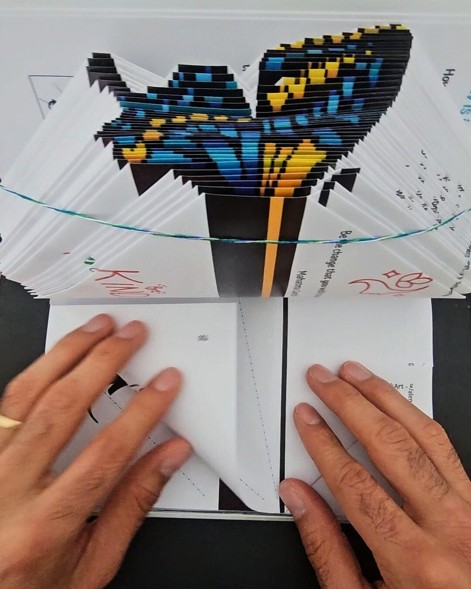

Open the book. Stand it upright. And where you'd normally see the edges of a thousand flat pages, you see instead a shape — a heart, a butterfly, a word — emerging from the paper like a sculpture. That's book folding: the art of turning the pages themselves into the art.
The technique is surprisingly simple in concept. Every page of the book is folded at specific points, and when all the pages are folded and the book is standing open, those folds combine to form a three-dimensional figure. The result looks far more complex than the process actually is.
If you're here because you saw a video of someone folding page after page and couldn't stop watching — that's the hook. It's visually satisfying in a way that's hard to explain. And the moment the figure reveals itself? That's the payoff.
What is book folding art?
Book folding art is exactly what it sounds like: art made from the pages of a book. Instead of reading the words, you fold each page to a precise measurement, turning the book's edge into a canvas for three-dimensional shapes. Standing open on a shelf, a finished book folding sculpture looks like it was carved — but every fold was made by hand, one page at a time.
The origins of book folding as an art form go back decades, practiced by artists who would spend hours measuring and calculating each fold by hand. What started as a niche paper art has spread across social media — largely because watching the figure emerge, fold by fold, is one of the most satisfying things you can see on a screen.
Today, book folding appears in home décor, as handmade gifts, and as a screen-free creative activity for anyone who wants to make something real with their hands.
How does book folding work?
In traditional book folding, the artist uses a printed pattern that tells them exactly how far to fold each page: fold the top corner down to a certain measurement, fold the bottom corner up to another. They go through the book page by page, folding each one to the pattern's specifications.
The measurements have to be precise. Traditional book folding requires a ruler, a pencil, and a pattern — and the patience to measure every single fold. For a 164-page book, that means 164 individual measurements. It's meditative, but it's also a real barrier for anyone who has never done it before.
The good news: with a pre-marked book, none of that setup is required. Which is exactly the point of BookArt.
How BookArt is different
BookArt solves the one thing that keeps most people from ever trying book folding: the setup. Instead of printing a pattern and measuring each page by hand, every BookArt book comes with the folding guides already printed directly on the pages as dotted lines.
You open the book. You see the dotted lines. You fold along them. That's it.

No ruler. No pencil marks. No pattern to print or interpret. The book itself tells you exactly what to do — and you just do it, page by page, until something beautiful appears.
Some BookArt designs also include a color-by-number system, where each fold zone is marked with a number and a suggested color. You fold first, then color the sculpture your way. The result is a fully personalized, one-of-a-kind piece — made entirely by your hands.
Every BookArt design is available on Amazon with the folding guides pre-printed. No experience needed.
Browse designs on Amazon ↗How long does book folding take?
A BookArt book with 164 pages typically takes between 2 and 3 hours to complete. That's not a race — it's the point. The process is slow by design. You fold one page, then the next, then the next, and somewhere in the rhythm of it, the figure begins to emerge.

Many people describe the experience as meditative. There are no decisions to make, no problems to solve, no screen to check. Just your hands and the paper, one fold at a time. It's one of the few activities where the process is as satisfying as the result.
What can you make with book folding?
The range of shapes possible with book folding is surprisingly wide. If you're looking for book folding ideas — whether to make for yourself or to give as a gift — here are the most popular designs:
Hearts — the most recognizable book folding shape, available in classic red and in the full-color Wavy Heart edition. Perfect for Valentine's Day, anniversaries, and any occasion involving love.
Butterflies — a symbol of transformation and new beginnings. BookArt's butterfly is available in full color and in a classic black-and-white version. One of the most gifted designs for birthdays and Mother's Day.
Paw prints — the go-to gift for pet lovers. A delicate, clean silhouette that works as home décor and as a memorial piece for a beloved companion.
Words and phrases — BookArt also produces designs with folded text, such as "I Love You." These work beautifully as gifts for partners and long-distance relationships.
Characters and figures — the Little Girl design, for example, is a fold-and-color book that lets you create a charming figure and then color it any way you choose. A favorite gift from daughters to moms.
Bold statements — the Black Skull is for the person who wants their shelf to say something unexpected. Dramatic, striking, and unlike anything else.
Is book folding hard for beginners?
Without a pre-marked book, book folding has a learning curve. Measuring every page, interpreting a pattern, staying consistent across 100+ folds — it takes practice to get clean results. This is the version of book folding that most tutorials show, and it's the reason many people watch but never try.
With a BookArt book, the answer is no. The guides are already there. You fold along the dotted line. The folds are designed to be forgiving — if you're slightly off on one page, it won't ruin the figure. And because there's no measuring involved, there's no math and no second-guessing.
Children as young as 10 have completed BookArt books. Adults who have never made anything with their hands describe finishing one as one of the most satisfying things they've done. The process is the point — slow, focused, and completely offline.

Is book folding a good gift idea?
It's one of the best. Here's why: it's not just an object — it's an experience. The person who receives a BookArt book gets something to make, not just something to have. The making takes 2–3 hours of genuine focus, and the result is something they made themselves, with their own hands, that they can display permanently.
That combination — the experience of making plus the permanent result — is rare in gift-giving. Most gifts are either consumed immediately or sit unused. A BookArt book sits on the shelf as a daily reminder that someone chose it for you, and that you made it.
It also works for people who say they're not creative. That's precisely who it's designed for. You don't need to be an artist. You don't need any background in paper art or design. You just need to follow the dotted line — and 2 hours later, there's something beautiful on your shelf that you built with your own hands.
For birthdays, Mother's Day, Valentine's Day, anniversaries, or any occasion where you want to give something that actually means something — book folding is the rare gift that lands every time.
Frequently asked questions about book folding
Every BookArt book is pre-marked and ready to fold. No experience needed. Ships from Amazon to the US, UK, and Europe.
Shop all designs on Amazon ↗